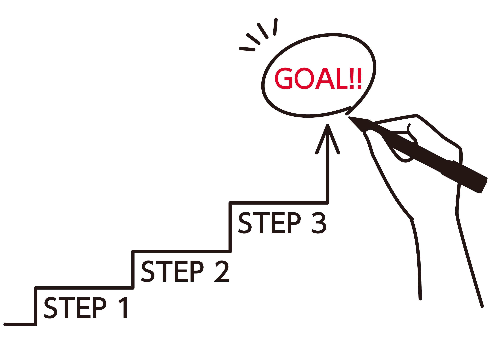

About

かもい けんいち
Age：38
Born：1987.11.24
Blood type：B
Hometown：八王子
Residence：吉祥寺
Hobby：愛犬と遊ぶ、デジタルアート
できること
-
WEB制作
デザイン | バナー制作 | HTML/CSSコーディング | Javascript | WordPress | PHP
-
強み
真面目で努力家 | 探究心 | 凝り性 | とりあえずやってみる | 試行錯誤 | 写真レタッチ
- 言語
- HTML / CSS / JavaScript / jQuery / PHP / MySQL
- ツール
- Visual Studio Code / Photoshop / Illustrator / Figma / Canva / MAMP / MySQL / FileZilla / Word / Excel / PowerPoint / Slack / Zoom / Teams / Google Meet
- 資格
- Webクリエイター能力認定試験エキスパート（2025年度）
おもなキャリア

-
- コールセンター
-
消費者金融、自動車保険、不動産等のコールセンター業務に従事。
お客様に寄り添ったヒアリング力やクレーム対応力を養う。
-
- ITエンジニア
-
IT企業にてサーバー保守運用業務、テストエンジニア業務に従事。
トラブル対応力、分析力、部署間の連携・進捗管理・スケジュール調整力を養う。
-
- 職業訓練
-
インタープランITスクール入校。
Webクリエイター・プログラミング科修了。
Webクリエイター能力認定試験エキスパート(2025年度)合格。
愛犬ギャラリー
マイペースなスムースコートチワワと、
明るい性格で人懐っこいトイプードルです。